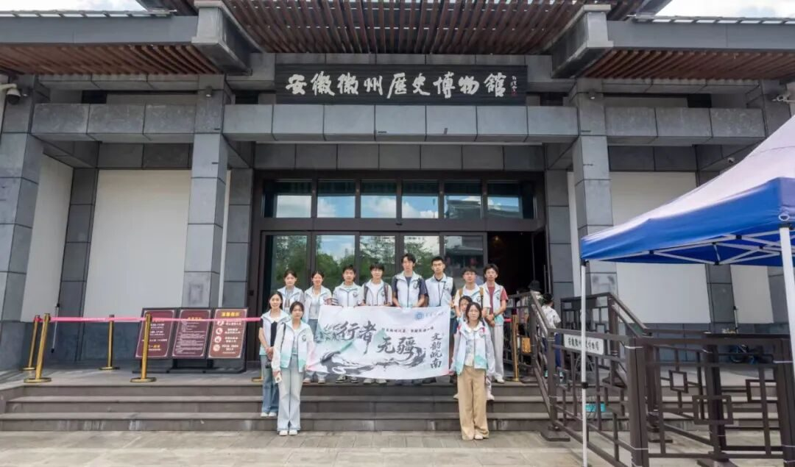
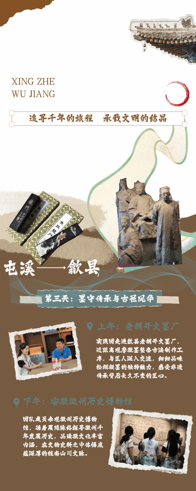
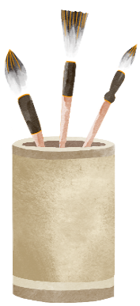
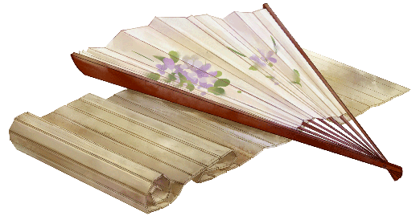
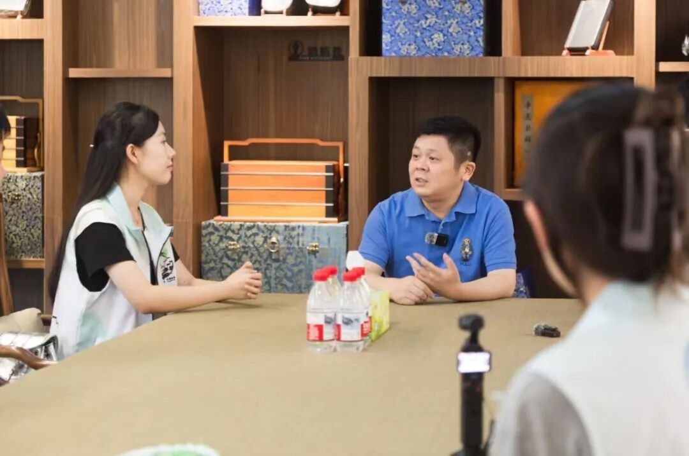

【行者无疆·文韵皖南】行者观墨，探览古城续文脉


循着连日寻访非遗的足迹，行者无疆实践团奔赴歙县，先后走进老胡开文墨厂与安徽徽州历史博物馆。前两日，我们于馆藏文物读懂徽州文脉，于烧饼烟火触摸市井匠心，于青石刀凿体悟石刻风骨；今日则走近笔墨砚台的文房非遗，再沉心静气翻阅整座徽州千年岁月，在墨香与史书之间，完整拼凑属于古徽州的完整文明画卷。

一厂炼松烟，描金悟墨魂


晨光微漾，墨香漫巷，我们踏入百年老字号老胡开文墨厂。徽墨、歙砚并称徽州文房双绝，同为国家级非物质文化遗产，千百年来依托徽州山林松材与文人风气兴盛不衰，是徽文化里文雅气韵最具象的载体。走入厂区，晾墨车间、炼墨工坊、雕模展台依次铺展，工人们按世代流传的工序静静劳作，松烟、桐油、药材调和捶打的气息萦绕周身，满是清雅文气。
跟随指引，我们完整观摩古法制墨、歙砚雕琢全流程。从深山采松烧烟，到千锤万杵和料，模压定型、阴干晾墨，一方上等徽墨要历经数月乃至数年方能成型；一旁砚台工坊内，匠人依石材天然纹理随形雕琢，山水亭台、草木云纹藏于方寸砚石，文房器具之中，尽藏徽州独有的雅致审美。

随后我们亲身体验描金技艺，手持细毫金笔，俯身于雕花纹饰的墨锭之上，顺着凹凸纹路细细填描金粉。笔尖轻颤，力道稍有偏差便会破坏墨面纹样，寥寥几笔，方知古时墨工描金工序的细腻与耐心。简单的实操，让我们真切体会文房非遗藏于细微处的匠心。
同时我们有幸专访周健老师。老师娓娓道来老胡开文跨越数百年的兴衰沿革，从古时书院治学的古法徽墨，到如今融合现代工艺的文创墨品。时代更迭，生产设备、产品样式不断创新，但厂区始终恪守“古法为本，守正传承”的核心宗旨。创新从来不是抛弃传统，而是让千年制墨手艺适配当下，守住松烟捶打、精工细作的根本，徽墨文脉才不会随岁月褪色。一番交谈，让我们读懂非遗传承平衡坚守与革新的深层智慧。
请点击观看

一馆存往事，阅史知徽源
下午我们走进安徽徽州历史博物馆，馆内陈列依朝代循序铺展，远古先民遗迹、唐宋建制沿革、明清徽商鼎盛、宗族礼教兴衰，一件件出土器物、文书碑刻、复原场景串联起完整历史脉络。我们驻足展板前细细品读，方才明白耕读之风、商贾之道、百工技艺并非凭空而生，而是山水地理、时代浪潮共同孕育的结果。
静静穿行展厅，过往碎片化的见闻在此串联成完整脉络。我们见过徽商远行的干粮烧饼，见过营建祠堂牌坊的青石雕刻，见过文人伏案书写的松烟古墨，如今站在通史展馆之中，终于看清所有非遗背后，是一座古城跨越千年的生存底色与精神追求。

笔墨承旧韵，行路续文脉
一炉松烟凝文气，一馆青简记沧桑。非遗从不是孤立单一的技艺，它根植于一方水土的漫长历史，烟火吃食、金石雕刻、文房笔墨，共同编织出丰满厚重的徽州文化。
传承不是固步自封，在守住根基的前提下拥抱变化，古老文脉方能长久鲜活。 少年行路不停，寻美不止。我们将带着墨香与史卷赋予的感悟，继续行走徽州大地，记录非遗百态，以青年之声传递绵延千年的徽地风雅。
行者无疆
来源 | 行者无疆实践团
图片 | 行者无疆实践团
文字 | 童思嘉
编辑 | 原羽佳 袁 婵
审核 | 闫 磊
责编 | 邹靓靓 周 亮